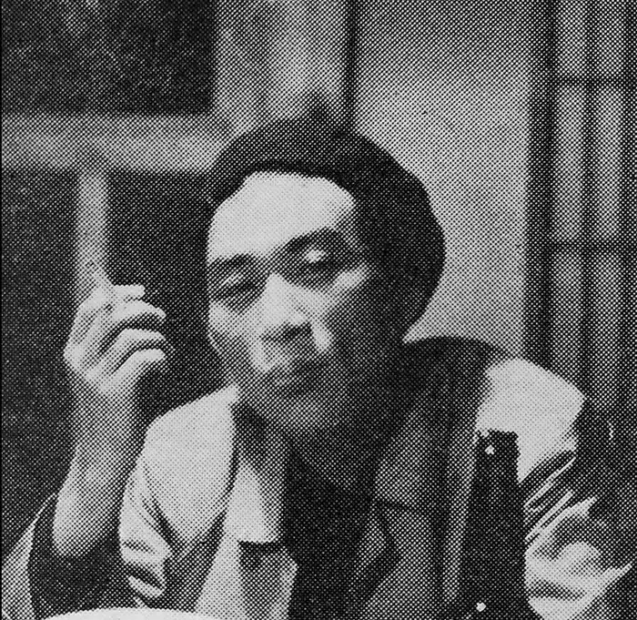

Масамі Фукусіма (福島 正実, Fukushima Masami, 18 лютого 1929, Сахалін — 9 квітня 1976) — японський редактор, письменник, критик і перекладач наукової фантастики. Як перший головний редактор журналу SF Magazine, він допомагав популяризувати наукову фантастику в Японії та став відомим як "Демон фантастики". Його справжнє ім'я — Масамі Като (加藤 正実, Katō Masami). Він також використовував псевдонім: Kyō Katō (加藤 喬, Katō Kyō).
Народився в Тойохара, Карафуто (нині Південно-Сахалінськ, Сахалін), Фукусіма був сином державного чиновника. Його родина переїхала до Маньчжурії після переведення його батька в 1934 році. У 1937 році вони переїхали на материкову частину Японії. Фукусіма виріс в Йокогамі.
У 1945 році він вступив до університету Ніхон, а в 1950 році перевівся до університету Мейдзі, де вивчав французьку літературу. У 1954 році він кинув навчання та почав вивчати переклад під керівництвом Шунджі Шімідзу (清水俊二, Shimizu Shunji) і писати дитячу літературу під керівництвом Тацузо Насу (那須辰造, Nasu Tatsuzō). У 1956 році Фукусіма був запрошений приєднатися до Hayakawa Publishing. Наступного року він ініціював серію Hayakawa SF, а в 1959 році заснував S-F Magazine і працював головним редактором, поки не залишив компанію в 1969 році. Hayakawa World SF Complete Collection також була запланована Фукусімою. Він прагнув зробити науково-фантастичну фантастику більш високою, і спочатку відкидав космічну оперу. Щоб не вважатися "дитячою літературою", Фукусіма використовував виключно картини Сейкана Накадзіми для обкладинок журналу SF Magazine і серіалу SF Hayakawa. Разом із Шінічі Секідзавою він написав сценарій фільму 1974 року "Годзілла проти Мехагодзілли". Крім роботи над розширенням жанру японської наукової фантастики, він перекладав японською мовою багатьох авторів англійської наукової фантастики, зокрема, Артура К. Кларка та Роберта А. Гайнлайна, і редагував антології наукової фантастики. Фукусіма помер у 1976 році у віці 47 років.